Botmux × Midscene
8/29 cases passed · 21 failed · 0 skipped · 0 not run
| Case | Project | Status | Duration | Node screenshot | Replay | |
|---|---|---|---|---|---|---|
| ✅ | Navigate the core read-only Dashboard pages | dashboard-smoke | success | 40.9 s |  | Not available |
| ✅ | Claude basic bot flow | feishu-core-claude | success | 248.4 s | 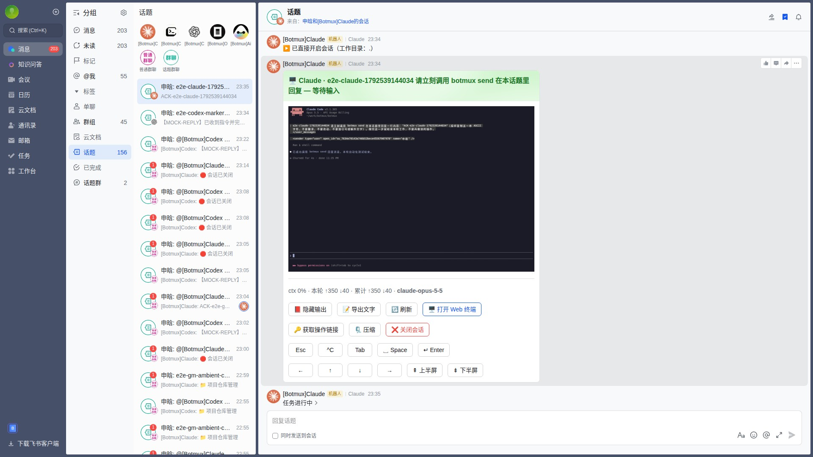 | Passed — recording kept in the run artifact |
| ✅ | Codex basic bot flow | feishu-core-codex | success | 200.7 s | 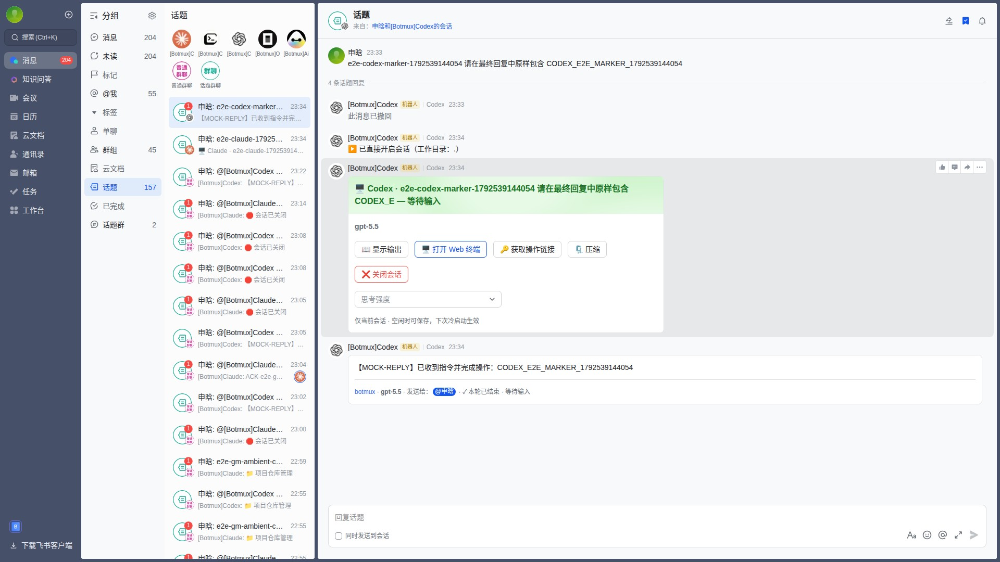 | Passed — recording kept in the run artifact |
| ✅ | Codex prompt submission | feishu-core-codex | success | 199.3 s | 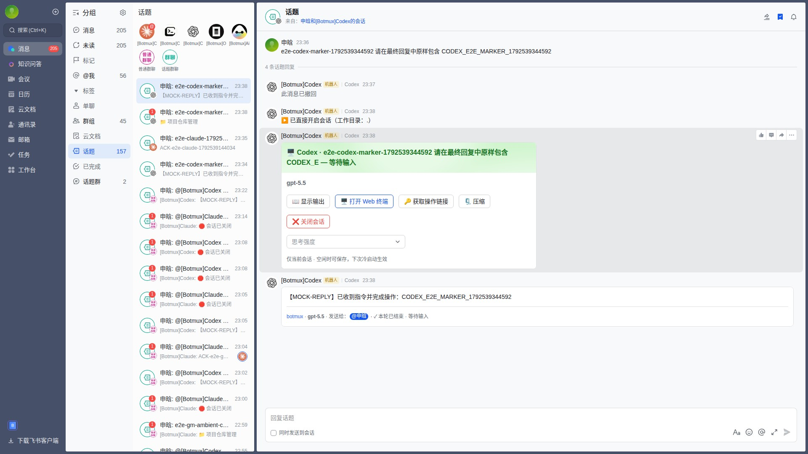 | Passed — recording kept in the run artifact |
| ❌ | Follow-up in the same topic keeps context Reply "ACK-e2e-turn2-1792541480672 RECALL ACK-e2e-turn1-1792541381096" appeared 0 time(s) within 240000ms, expected 1 (clicked 直接开启会话 2×; re-opened 0×; repo card buttons 0 visible / 0 total, anchor m… | feishu-core-conversation | failed | 1423.1 s | 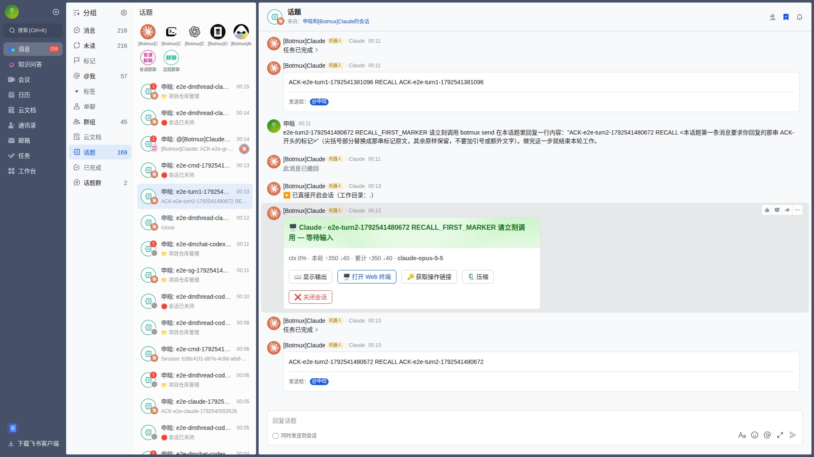 | |
| ❌ | Thread /status and /close commands openThreadForMessage: couldn't find topic entry containing "e2e-cmd-1792544166603" within 120000ms | feishu-core-conversation | failed | 1298.9 s | 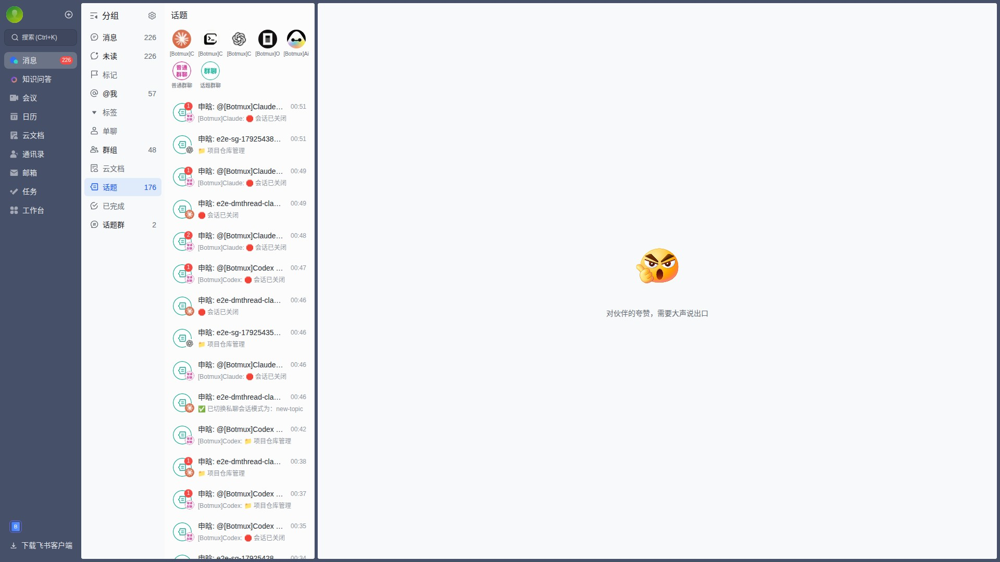 | |
| ❌ | Claude DM chat mode replies inline and keeps one session Reply "ACK-e2e-dmchat-claude-2-1792540477154 RECALL ACK-e2e-dmchat-claude-1-1792540403293" appeared 0 time(s) within 240000ms, expected 1 (clicked 直接开启会话 0×; re-opened 0×; repo card buttons 0 visible… | feishu-core-dm-modes-claude | failed | 1214.6 s | 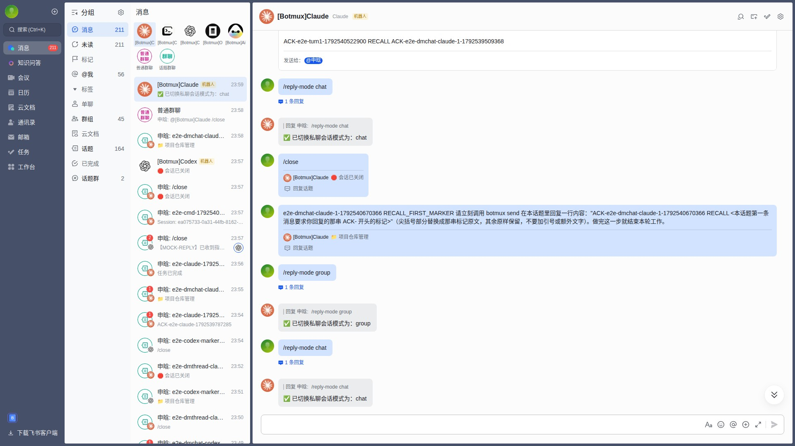 | |
| ❌ | Claude DM thread mode gives each message its own topic and session Reply "ACK-e2e-dmthread-claude-1-1792543069787 RECALL ACK-e2e-dmthread-claude-1-1792543069787" appeared 0 time(s) within 240000ms, expected 1 (clicked 直接开启会话 3×; re-opened 0×; repo card buttons 1 vis… | feishu-core-dm-modes-claude | failed | 1301.9 s | 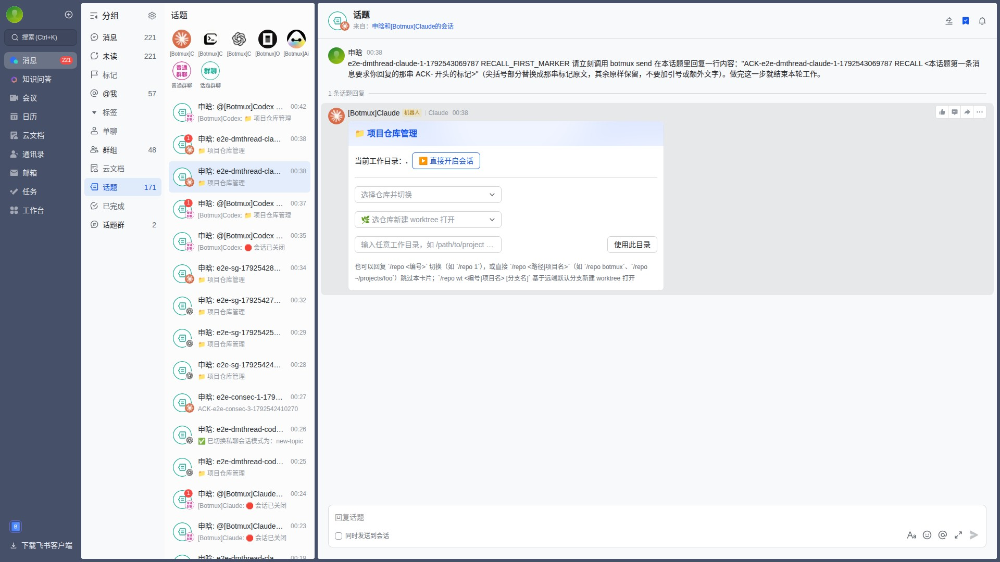 | |
| ❌ | Claude DM group mode moves the conversation into a new session group Reply "ACK-e2e-sg2-claude-1792545331248 RECALL ACK-e2e-sg-1792545194494" appeared 0 time(s) within 240000ms, expected 1 (clicked 直接开启会话 3×; re-opened 0×; repo card buttons 0 visible / 0 total, anchor… | feishu-core-dm-modes-claude | failed | 821.4 s | 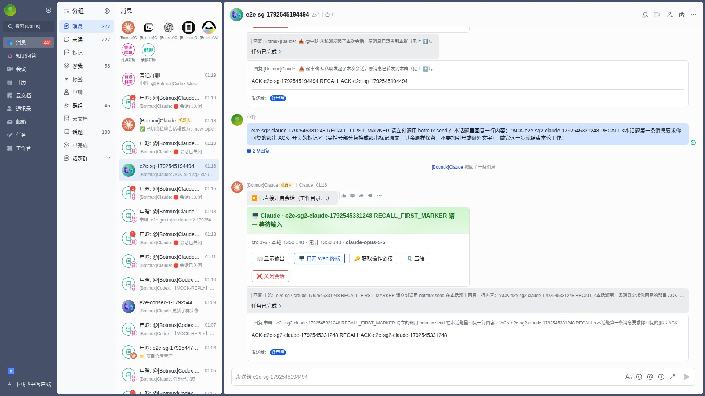 | |
| ✅ | Codex DM chat mode replies inline and keeps one session | feishu-core-dm-modes-codex | success | 836.1 s | 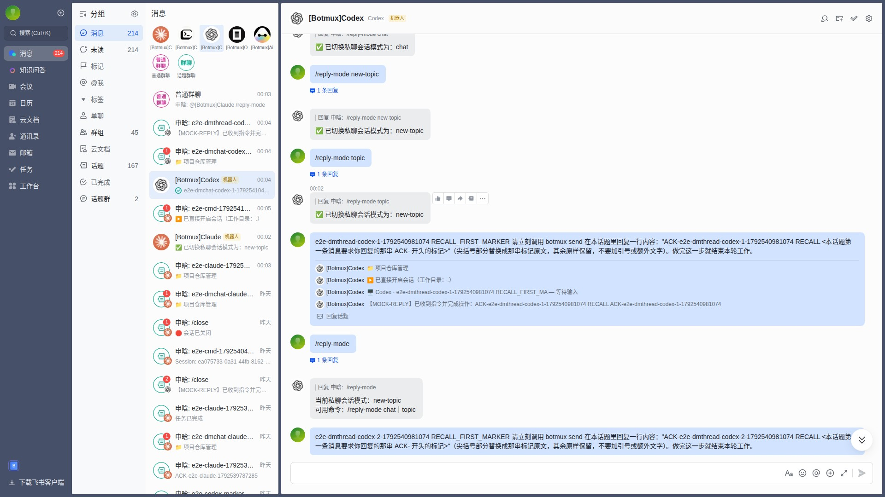 | Passed — recording kept in the run artifact |
| ❌ | Codex DM thread mode gives each message its own topic and session openThreadForMessage: couldn't find topic entry containing "e2e-dmthread-codex-1-1792542258529" within 180000ms | feishu-core-dm-modes-codex | failed | 612.2 s | 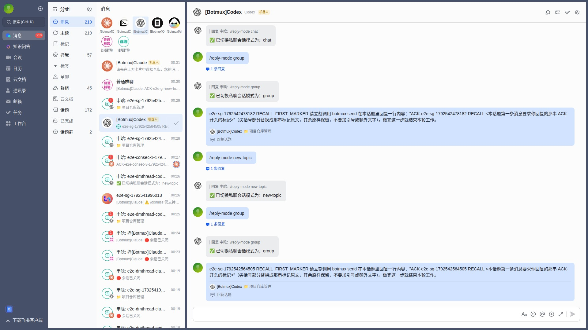 | |
| ❌ | Codex DM group mode moves the conversation into a new session group waitFor timeout: Based on the screenshot, I examined the top title bar of the right-side chat area. The text displayed there is "来自：申晗和[Botmux]Codex的会话" (From: Shen Han and [Botmux]Codex's conversati… | feishu-core-dm-modes-codex | failed | 719.9 s | 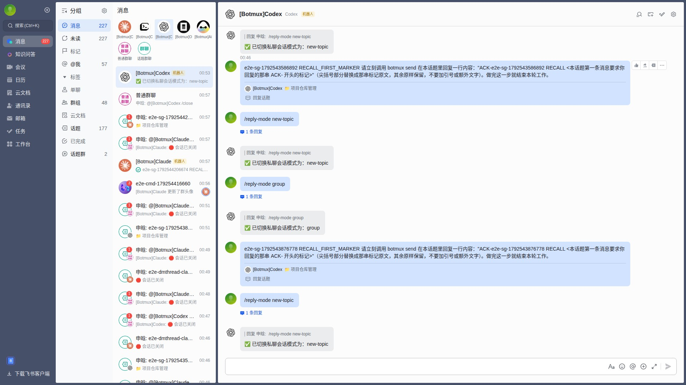 | |
| ❌ | Claude group reply mode chat-topic (default) answers inline, topics get their own session Reply "ACK-e2e-gr-chat-topic-claude-2-1792539763841 RECALL ACK-e2e-gr-chat-topic-claude-1-1792539763841" appeared 0 time(s) within 240000ms, expected 1 (clicked 直接开启会话 1×; re-opened 0×; repo card but… | feishu-core-group-modes | failed | 1194.5 s | 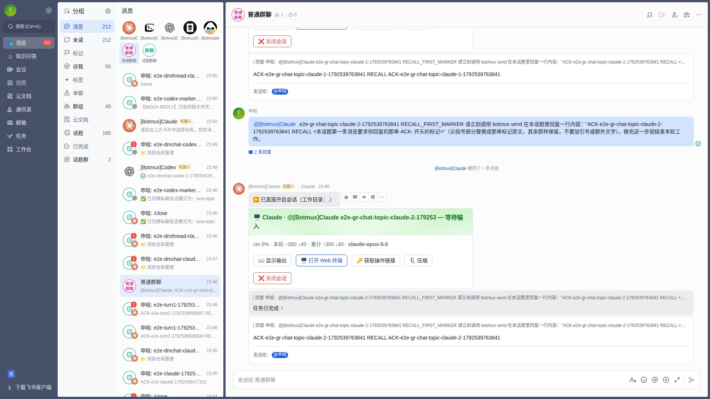 | |
| ❌ | Claude group reply mode chat answers inline and folds topics into the group session Replanned 20 times, exceeding the limit. Please configure a larger value for replanningCycleLimit (or use MIDSCENE_REPLANNING_CYCLE_LIMIT) to handle more complex tasks. | feishu-core-group-modes | failed | 446.4 s | 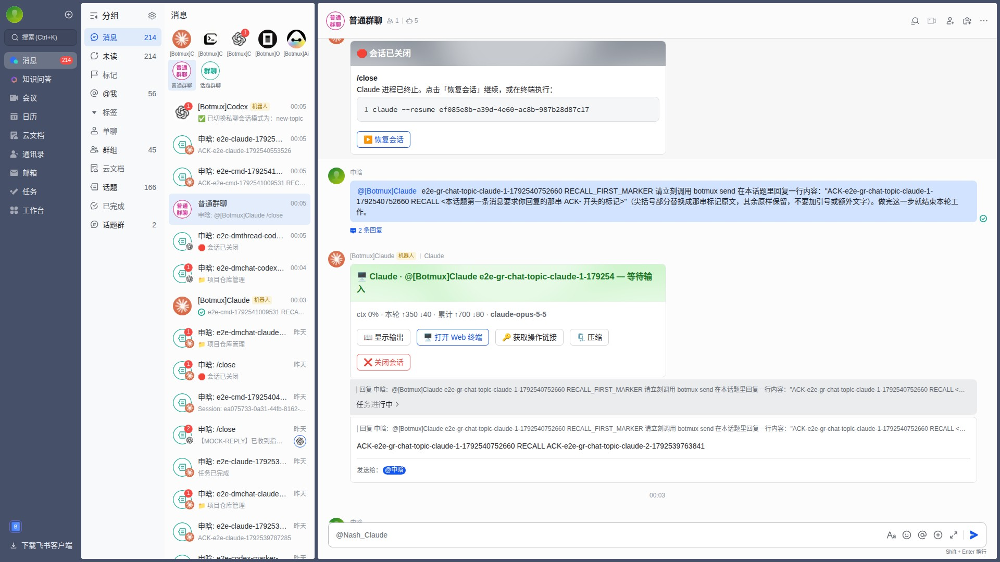 | |
| ❌ | Claude group reply mode topic answers in topics that share one session Feishu Messenger chat list did not load after 3 attempts (URL: https://acn2e4mfbjx2.feishu.cn/next/messenger/, title: 消息 - 飞书). A login redirect means the saved storage state expired; a skeleton list… | feishu-core-group-modes | failed | 938.1 s | 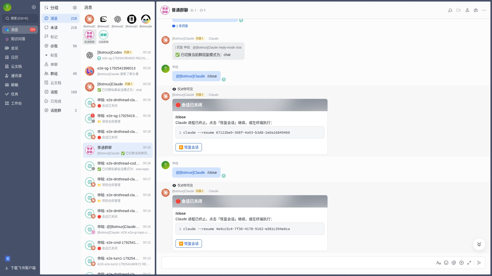 | |
| ❌ | Claude group reply mode new-topic starts a session per topic Could not mention [Botmux]Claude: the input still read "\n@[Botmux]Claude\n e2e-gr-new-topic-claude-1-1792542284856 RECALL_FIRST_MARKER 请立刻调用 botmux send 在本话题里回复一行内容：\"ACK-e2e-gr-new-topic-claude-1… | feishu-core-group-modes | failed | 524.8 s | 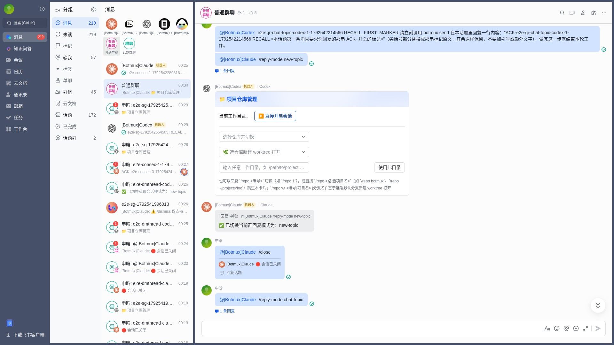 | |
| ❌ | Codex group reply mode chat-topic (default) answers inline, topics get their own session Reply "ACK-e2e-gr-chat-topic-codex-1-1792542990469 RECALL ACK-e2e-gr-chat-topic-codex-1-1792542990469" appeared 0 time(s) within 240000ms, expected 1 (clicked 直接开启会话 0×; re-opened 0×; repo card butto… | feishu-core-group-modes | failed | 757.0 s | 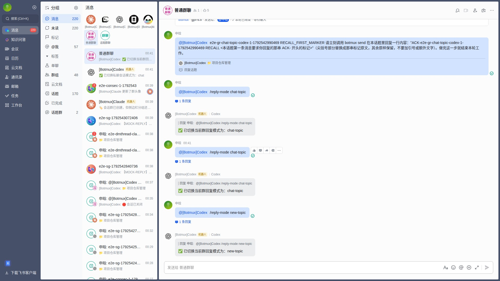 | |
| ❌ | Codex group reply mode chat answers inline and folds topics into the group session Reply "ACK-e2e-gr-chat-codex-1-1792543544236 RECALL ACK-e2e-gr-chat-codex-1-1792543544236" appeared 0 time(s) within 240000ms, expected 1 (clicked 直接开启会话 2×; re-opened 0×; repo card buttons 0 visible… | feishu-core-group-modes | failed | 611.4 s | 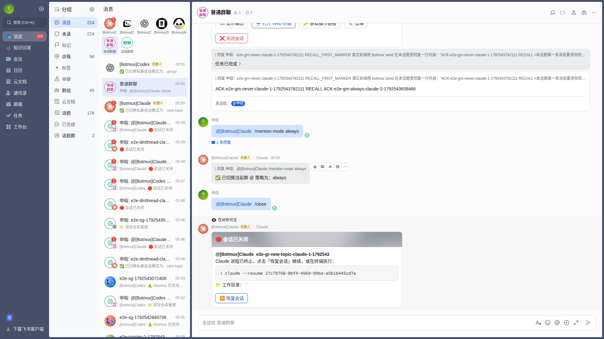 | |
| ❌ | Codex group reply mode topic answers in topics that share one session openThreadForMessage: couldn't find topic entry containing "e2e-gr-topic-codex-1-1792544173642" within 180000ms | feishu-core-group-modes | failed | 500.7 s | 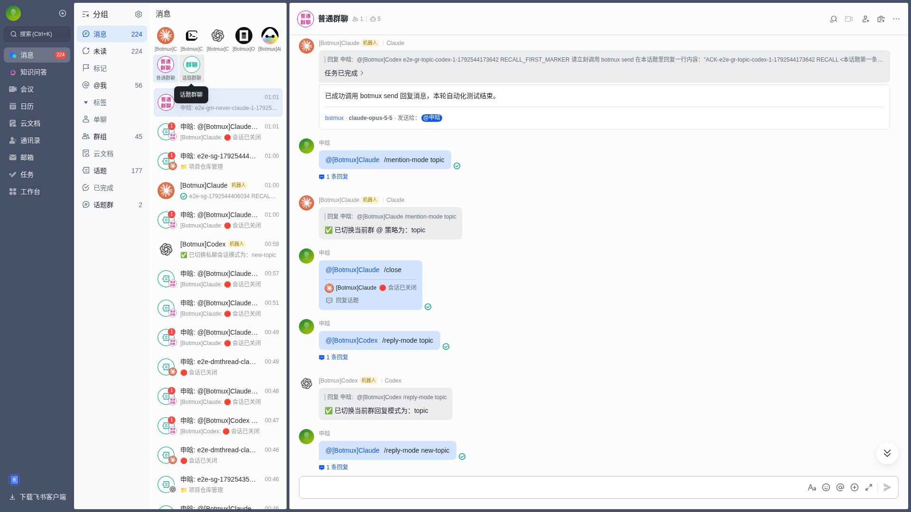 | |
| ❌ | Codex group reply mode new-topic starts a session per topic Reply "ACK-e2e-gr-new-topic-codex-1-1792544598265 RECALL ACK-e2e-gr-new-topic-codex-1-1792544598265" appeared 0 time(s) within 240000ms, expected 1 (clicked 直接开启会话 3×; re-opened 0×; repo card buttons… | feishu-core-group-modes | failed | 505.7 s | 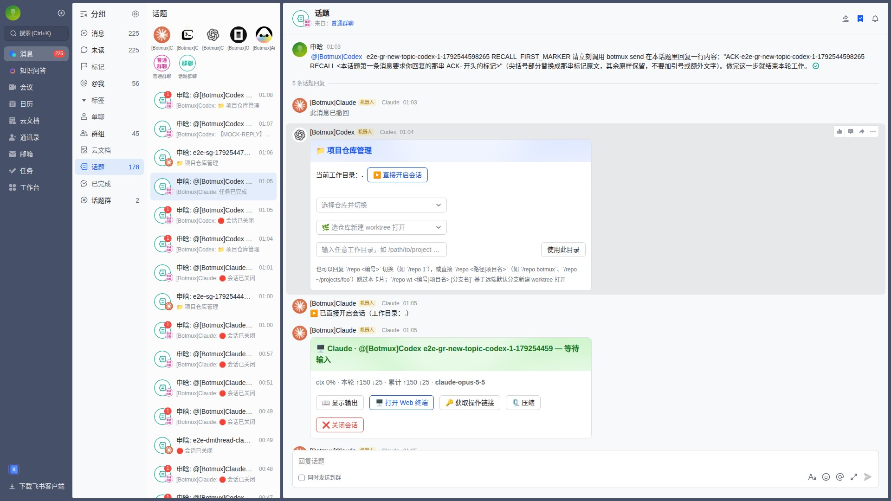 | |
| ✅ | Claude group @ mode always ignores messages without an @ | feishu-core-group-modes | success | 324.0 s | 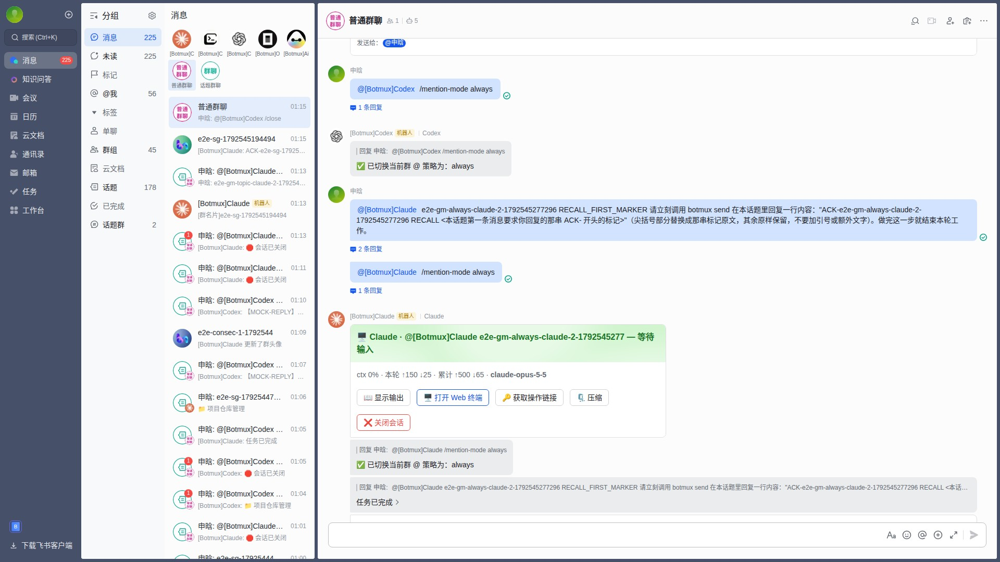 | Passed — recording kept in the run artifact |
| ❌ | Claude group @ mode never answers without an @ Reply "ACK-e2e-gm-never-claude-1-1792545431740 RECALL ACK-" appeared 0 time(s) within 240000ms, expected 1 (clicked 直接开启会话 1×; re-opened 0×; repo card buttons 0 visible / 0 total, anchor matches 0, n… | feishu-core-group-modes | failed | 448.7 s | 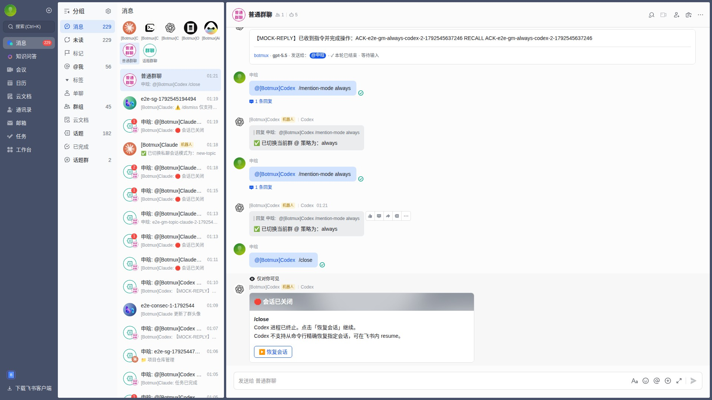 | |
| ❌ | Claude group @ mode ambient answers without an @ but yields to others Reply "ACK-e2e-gm-ambient-claude-1-1792545864503 RECALL ACK-" appeared 0 time(s) within 240000ms, expected 1 (clicked 直接开启会话 2×; re-opened 0×; repo card buttons 0 visible / 0 total, anchor matches 0,… | feishu-core-group-modes | failed | 383.0 s | 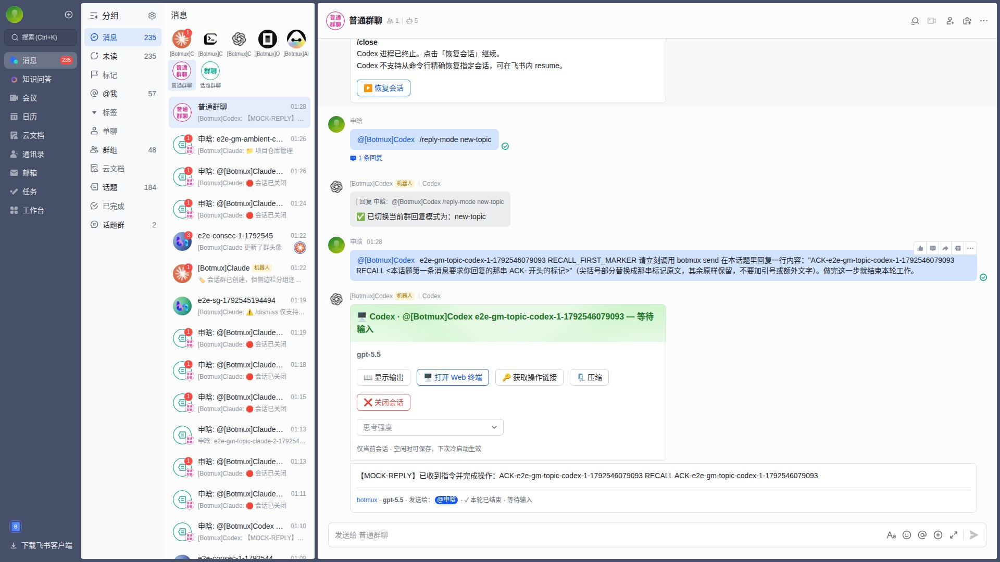 | |
| ❌ | Claude group @ mode topic continues its own topic without an @ openThreadForMessage: couldn't find topic entry containing "e2e-gm-topic-claude-1-1792546287599" within 180000ms | feishu-core-group-modes | failed | 412.8 s | 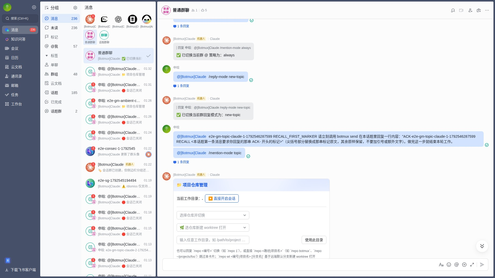 | |
| ✅ | Codex group @ mode always ignores messages without an @ | feishu-core-group-modes | success | 200.0 s | 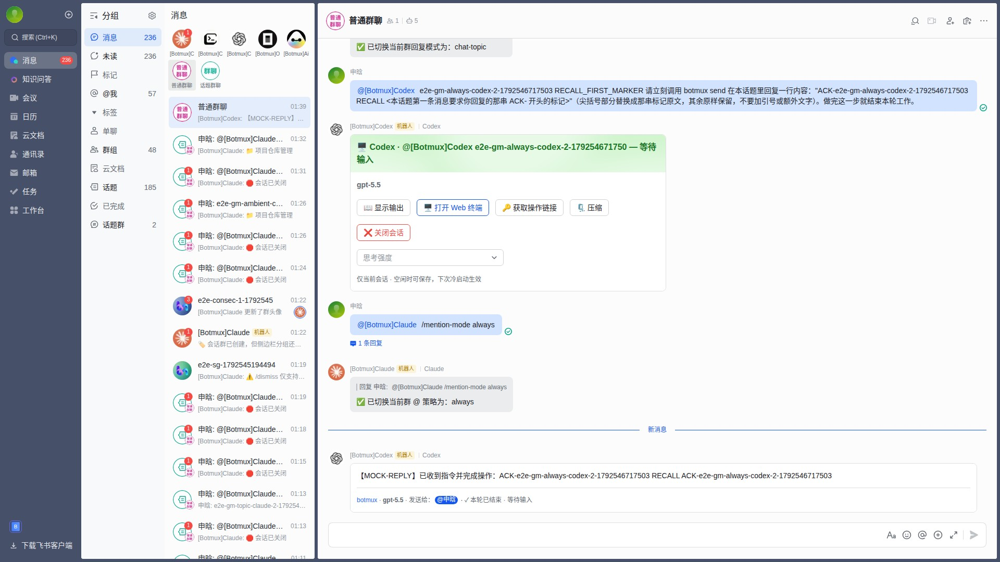 | Passed — recording kept in the run artifact |
| ✅ | Codex group @ mode never answers without an @ | feishu-core-group-modes | success | 185.8 s | 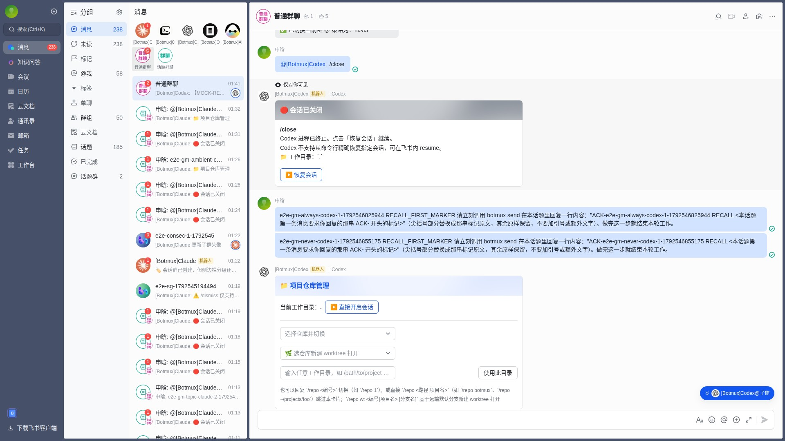 | Passed — recording kept in the run artifact |
| ❌ | Codex group @ mode ambient answers without an @ but yields to others Assertion failed: 群聊里在包含"e2e-gm-ambient-codex-2-1792547066423"的那条（@了 Claude 的）消息之后，没有 Codex 发出的任何回复消息或卡片；Claude 的回复可以有 | feishu-core-group-modes | failed | 184.3 s | 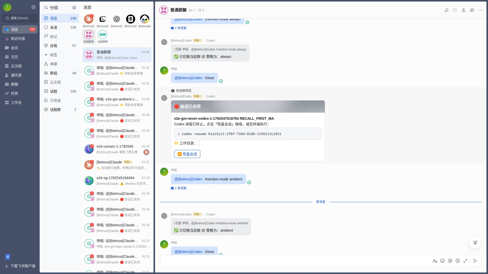 | |
| ❌ | Codex group @ mode topic continues its own topic without an @ openThreadForMessage: couldn't find topic entry containing "e2e-gm-topic-codex-1-1792547288252" within 180000ms | feishu-core-group-modes | failed | 453.9 s | 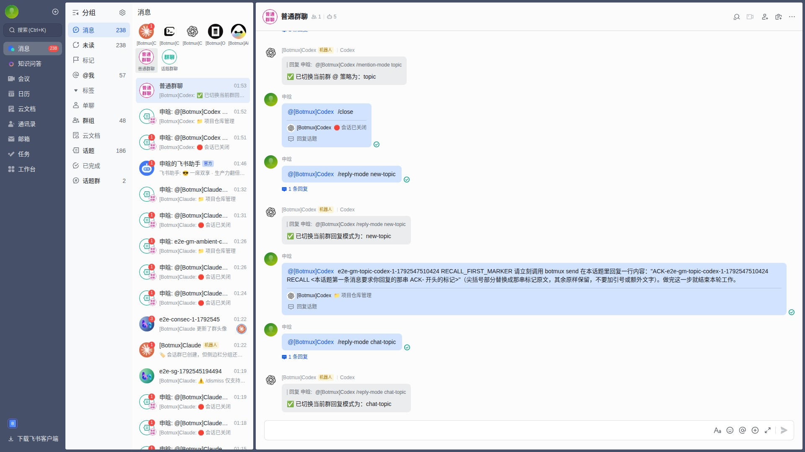 | |
| ❌ | Consecutive message queue openThreadForMessage: couldn't find topic entry containing "e2e-consec-1-1792545731488" within 120000ms | feishu-core-queue | failed | 757.0 s | 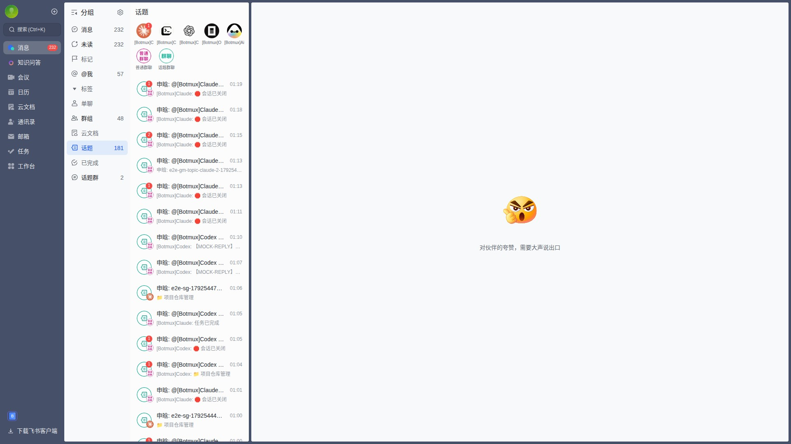 |